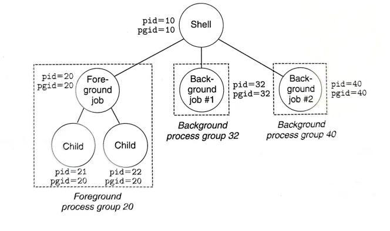

by Gu Wei
2021年11月
IT SUCKS. MINE EVEN SUCKS MORE.
本次实验要求实现一个简单的shell。
该实验在tsh.c文件中实现了大部分的框架，需要自己完成以下函数内容：
eval：解析和解释命令行的主例程，大约70行。
builtin_cmd：识别并解释内置命令：quit、fg、bg和job，大约25行。
quit：退出当前shellfg <job>：通过发送SIGCONT信号来重启<job>，并在前台运行。其中<job>可以是作业也可以是进程，%1表示作业号为1的作业，1表示进程号为1的进程。bg <job>：通过发送SIGCONT信号来重启<job>，并在后台运行。job：列出所有后台作业。waitfg：等待前台作业完成
sigchld_handler：SIGCHLD信号的处理函数
sigint_handler：SIGINT信号的处理函数
sigtstp_handler：SIGTSTP信号的处理函数
我们希望实现的shell具有以下功能：
tsh>|或I/O重定向<和>ctrl-c（ctrl-z）应该会导致SIGINT（SIGTSTP）信号发送到当前前台作业以及该作业的任何子进程。＆结束，则shell应该在后台运行作业，否则它将在前台运行该作业。如果没有前台作业，那么信号应该没有效果。quit、jobs、bg <job>和fg <job>。通过make来得到我们shell的可执行目标文件，然后这里给出了一系列的验证文件，比如trace01.txt，其中包含了一些命令，我们可以通过make test01来得到我们shell的输出结果，可以和make rtest01输出的结果对比，或tshref.out比较，判断我们shell是否正确。
以上内容摘自知乎。其实就是handout的翻译。

以上图为例说明。当我们./tsh后，就建立了图中shell进程。当输入内建命令，就直接在shell进程中运行，不用fork子进程。当然实际的shell运行内建命令并不一定是这么简单的。如果输入的不是内建命令的话，不妨假设是个前台工作。我们就fork一个进程（Foreground job），并且把这个子进程的pgid设置为pid（这里是20），最后再execve它。注意到，fork出的子进程默认pgid和父进程一致，所以之前pgid=10。于是该子进程之后fork出来的子进程child就会和foreground job有一致的pgid了。这样的设计为了给工作中所有进程发送信号变得可行。
xxxxxxxxxx71struct job_t { /* The job struct */2 pid_t pid; /* job PID */3 int jid; /* job ID [1, 2, ...] */4 int state; /* UNDEF, BG, FG, or ST */5 char cmdline[MAXLINE]; /* command line */6};7struct job_t jobs[MAXJOBS]; /* The job list */我们通过维护jobs该全局变量来实现job、jg以及bg命令。对于前台工作，shell进程会挂起并等待它的完成，否则不会挂起。job命令只需访问jobs数组并输出即可；jg发送SIGCONT信号给一个后台工作来继续它的执行（之前可能被stop了），并修改其在jobs的state，同时把shell进程挂起来等待它完成；bg就发送SIGCONT信号即可。
而访问jobs这个全局变量，就会产生竞态。我们在shell进程中add job，并在sigchld_handler中delete job，可能会产生子进程已经结束并发送sigchld信号给父进程了，父进程还没有add job的情况出现。这便需要我们在shell进程中阻塞信号来确保add在delete之后。此外，任何访问全局变量的critical section都要阻塞所有信号，这是因为父进程在读写全局变量的时候，如果突然被信号打断，而信号处理函数也要读写全局变量，这样就会导致奇怪的错误。
信号处理函数是个相当棘手的问题。那SIGCHLD信号来说吧。子进程的终止属于异步事件，父进程无法预知子进程何时终止。父进程可以调用不带WNOHANG标志的wait()或者waitpid()挂起父进程来回收子进程；也可以周期性调用带有WNOHANG标志的waitpid()来对已经终止的子进程轮询。而前者无法实现后台工作，后者浪费了CPU资源。于是我们采取了为SIGCHLD函数建立信号处理程序sigchld_handler。利用while(waitpid(-1,NULL,WNOHANG) > 0)来回收子进程。
大致想法如上。
xxxxxxxxxx1051/* 2 * eval - Evaluate the command line that the user has just typed in3 * 4 * If the user has requested a built-in command (quit, jobs, bg or fg)5 * then execute it immediately. Otherwise, fork a child process and6 * run the job in the context of the child. If the job is running in7 * the foreground, wait for it to terminate and then return. Note:8 * each child process must have a unique process group ID so that our9 * background children don't receive SIGINT (SIGTSTP) from the kernel10 * when we type ctrl-c (ctrl-z) at the keyboard. 11*/12void eval(char *cmdline) 13{14 char *argv[MAXARGS];15 int isBG = parseline(cmdline, argv); //build argv16
17 // 处理输入！18 /**19 * 输入为内建命令，直接运行，实际的shell可以在后台运行内建命令20 * 虽然可能如同jobs wulala这种错误输入，但是这里按tshref实现21 */ 22 const char *command = argv[0];23 if (command == NULL) //输入为空24 return;25 else if(!strcmp(command,"quit")) //recall：相等时strcmp返回026 exit(0);27 //如果输入第一个字符为&，跳过该命令（按tshref实现）28 else if(!strcmp(command,"&"))29 return;30 else if(!strcmp(command,"bg")||!strcmp(command,"fg"))31 do_bgfg(argv);32 else if(!strcmp(command,"jobs"))33 listjobs(jobs);34 /**35 * 输入不是内建命令，要fork后exec36 */ 37 else38 {39 sigset_t mask_all, mask_one, prev; //创建信号集，来作为掩码40 sigfillset(&mask_all); //初始化set为全集，两种初始化手段之一41 sigemptyset(&mask_one); //初始化set为空集合，两种初始化手段之一42 sigaddset(&mask_one, SIGCHLD); //SIGCHILD加入mask_one集合43 /**44 * block SIGCHILD! 45 * 我们在sigchld_handler中remove了job，在父进程add了job46 * 为了使先父进程add job后再有remove job47 * 需要在fork前block SIGCHILD，在父进程add job后再unblock SIGCHILD48 */ 49 //block SIGCHILD, mask_one is stored in prev (for later recovery)50 sigprocmask(SIG_BLOCK, &mask_one, &prev);51 pid_t pid = fork();52 /**53 * 这里就举个处理系统调用函数的返回值的例子吧54 * 按理说sigprocmask、exit、wait等系统调用函数的返回值都要处理55 * handout说不处理要扣5分。。。56 * 可以用csapp提供的包装函数，但是不想修改了（就是把系统调用函数的首字母大写57 */ 58 if (pid < 0) 59 unix_error("fork error");60 /**61 * 子进程！62 */ 63 else if (pid == 0)64 {65 //子进程继承了父进程的阻塞向量，需要解除阻塞66 //避免收不到它本身的子进程的信号67 sigprocmask(SIG_SETMASK, &prev, NULL);68 /**69 * shell进程fork出来的子进程是自己进程组的领导，否则无前后台之说70 * 默认子进程的pgid就是父进程的pid，所以这里需要修改71 * setpgid(pid,pgid): 把pid的pgid设置为函数调用者的pgid72 * 如果pid为0，则pid使用调用者的pid；73 * 如果pgid为0，则pid的pgid会设置为pid74 */ 75 setpgid(0,0);76 //正常运行execve函数会替换内存，不会返回到调用者进程77 //但是有错误的话，会返回-178 if (execve(argv[0], argv, environ) < 0)79 {80 printf("%s: Command not found\n", argv[0]);81 exit(0);82 }83 }84 /**85 * 父进程！86 */ 87 else88 {89 //访问全局变量阻塞所有信号90 sigprocmask(SIG_BLOCK, &mask_all, NULL);91 if(isBG) 92 addjob(jobs, pid, BG, cmdline);93 else94 addjob(jobs, pid, FG, cmdline);95 96 //addjob完成后就可以unblock SIGCHLD了97 sigprocmask(SIG_SETMASK, &prev, NULL);98 if(isBG)99 printf("[%d] (%d) %s",pid2jid(pid), pid, cmdline);100 else101 waitfg(pid); //等待前台作业完成102 }103 }104 return;105}我将builtin_cmd函数放在了eval函数里面，可能是当初瞎写留下来的痕迹吧。
这里再强调一下如何保证add job在delete job之前执行吧。我们在fork前就阻塞了SIGCHLD信号，这样父进程在访问addjob前是接收不到SIGCHLD信号的。这样便不会执行SIGCHLD的处理程序，就能保证add在delete之前。
注意到我们在addjob(jobs, pid, BG, cmdline);前阻塞了所有信号，是为了全局变量的修改不被信号打断。
setpgid(0,0);把子进程的gpid设置为自己的pid。
此外，handout指出不对系统调用函数的返回值进行处理的话，要扣style分数5分。我几乎都没有处理，这里给个例子：
xxxxxxxxxx171void unix_error(char *msg) /* Unix-style error */2{3 fprintf(stderr, "%s: %s\n", msg, strerror(errno));4 exit(0);5}6pid_t Fork(void) 7{8 pid_t pid;9 if ((pid = fork()) < 0)10 unix_error("Fork error");11 return pid;12}13void Execve(const char *filename, char *const argv[], char *const envp[]) 14{15 if (execve(filename, argv, envp) < 0)16 unix_error("Execve error");17}一般就是看返回值是不是-1，如果是的话，这些系统调用函数还会修改errno这个全局变量，我们可以通过strerror(errno)查看具体的错误类型。
xxxxxxxxxx641/* 2 * do_bgfg - Execute the builtin bg and fg commands3 * bg/fg jobs 给jobs发送SIGCONT信号，并分别在后台和前台运行4 * jobs既可以是PID，也可以是JID，JID前面要加上%5 * 按参考tshref，我们也不检查bg 1 wulala这种错误的输入6 */7void do_bgfg(char **argv) 8{9 if (argv[1] == NULL)10 {11 printf("%s command requires PID or %%jobid argument\n", argv[0]);12 return;13 }14
15 struct job_t *job;16 int id;17
18 // 读到jid19 if (sscanf(argv[1], "%%%d", &id) > 0)20 {21 job = getjobjid(jobs, id);22 if (job == NULL)23 {24 printf("%%%d: No such job\n", id);25 return;26 }27 }28 // 读到pid29 else if (sscanf(argv[1], "%d", &id) > 0)30 {31 job = getjobpid(jobs, id);32 if (job == NULL)33 {34 printf("(%d): No such process\n", id);35 return;36 }37 }38 // 格式错误39 else40 {41 printf("%s: argument must be a PID or %%jobid\n", argv[0]);42 return;43 }44 /**45 * kill应该发送到job中的所有进程46 * 所以传入参数是pgid47 * 而eval函数保证了job中的pid就是pgid48 */ 49 if (!strcmp(argv[0], "bg"))50 {51 //进程组是pgid的相反数52 kill(-(job->pid), SIGCONT);53 job->state = BG;54 printf("[%d] (%d) %s", job->jid, job->pid, job->cmdline);55 }56 else57 {58 kill(-(job->pid), SIGCONT);59 job->state = FG;60 waitfg(job->pid); //等待前台作业完成61 }62
63 return;64}这个难度尚可，就是学习一下kill函数的用法。而之前我们把Foreground job和Background job的pgid和pid设置为一样，在这里便体现了其作用。
按理说这里读写job也应该阻塞信号，但是我没有写。。。
xxxxxxxxxx401/* 2 * waitfg - Block until process pid is no longer the foreground process3 */4/*高效并正确(?)的版本*/5void waitfg(pid_t pid)6{7 sigset_t mask, prev;8 sigemptyset(&mask);9 sigaddset(&mask, SIGCHLD);10 sigprocmask(SIG_BLOCK, &mask, &prev);11 /**12 * int sigsuspend(const sigset_t *mask)相当于13 * sigprocmask(SIG_SETMASK, &mask, &prev)14 * pause()15 * sigprocmask(SIG_SETMASK, &prev, NULL)16 * 的原子版本17 */ 18 while (pid == fgpid(jobs))19 sigsuspend(&prev);20 sigprocmask(SIG_SETMASK, &prev, NULL);21}22/*忙等是可行的，但是效率差23void waitfg(pid_t pid)24{25 while (pid == fgpid(jobs))26 sleep(1);27 return;28} 29*/30/*我不认为以下是可行的。31void waitfg(pid_t pid)32{33 sigset_t m;34 sigemptyset(&m);35 while (pid == fgpid(jobs))36 当此时传入sigchild信号，并接下来无任何信号传入，会永远pause37 sigsuspend(&m);//这和pause()不就是一样了吗38 return;39}40*/waitfg函数网上看来看去就两种写法，我觉得很不对呀。忙等有效率差的问题，而用sigsuspend函数的则写错了，会产生竞态。我的版本测试下来应该没有问题。
我们的waitfg函数是没有回收子进程的，在handout有这句话：
While other solutions are possible, such as calling waitpid in both waitfg and sigchld handler, these can be very confusing.
便从了。
这两个代码应该一致的吧。
xxxxxxxxxx351/* 2 * sigint_handler - The kernel sends a SIGINT to the shell whenver the3 * user types ctrl-c at the keyboard. Catch it and send it along4 * to the foreground job. 5 */6void sigint_handler(int sig) 7{8 int olderrno = errno;9 sigset_t mask_all, prev;10 sigfillset(&mask_all);11 sigprocmask(SIG_BLOCK, &mask_all, &prev);12 pid_t fpid = fgpid(jobs);13 if(fpid)14 kill(-fpid, sig);15 sigprocmask(SIG_SETMASK, &prev, NULL);16 errno = olderrno;17}18
19/*20 * sigtstp_handler - The kernel sends a SIGTSTP to the shell whenever21 * the user types ctrl-z at the keyboard. Catch it and suspend the22 * foreground job by sending it a SIGTSTP. 23 */24void sigtstp_handler(int sig) 25{26 int olderrno = errno;27 sigset_t mask_all, prev;28 sigfillset(&mask_all);29 sigprocmask(SIG_BLOCK, &mask_all, &prev);30 pid_t fpid = fgpid(jobs);31 if(fpid)32 kill(-fpid, sig);33 sigprocmask(SIG_SETMASK, &prev, NULL);34 errno = olderrno;35}再强调几点：
Foreground job和Background job的pgid和pid设置为一样，使得kill函数简单可行errno是全局变量，为了避免修改而使得shell进程中的strerror(errno)输出错误，我们存入了olderror这个局部变量里。xxxxxxxxxx411void sigchld_handler(int sig) 2{3 int olderrno = errno;4 pid_t pid;5 int status;6 sigset_t mask_all, prev;7 sigfillset(&mask_all);8 /**9 * pid_t waitpid(pid_t __pid, int *__stat_loc, int __options)的options：10 * WNOHANG：若等待集合中没有子进程被终止，父进程不会被挂起，而是waitpid函数返回011 * WUNTRACED：除了返回终止子进程的信息外，还返回因信号而停止的子进程信息12 * WNOHANG|WUNTRACED：如果等待集合无子进程终止或者停止，立刻返回0，否则返回该终止或停止的子进程的pid13 */14 while ((pid = waitpid(-1,&status,WNOHANG|WUNTRACED)) > 0)15 {16 sigprocmask(SIG_BLOCK, &mask_all, &prev);17 if(WIFEXITED(status))//return true if the child terminated normally, via a call to exit or a return18 {19 deletejob(jobs,pid);20 }21 if(WIFSTOPPED(status))//return true if the child that caused the return is currently stopped22 {23 struct job_t *job = getjobpid(jobs, pid); //Find a job (by PID) on the job list24 int jid = pid2jid(pid); //Map process ID to job ID25 printf("Job [%d] (%d) stopped by signal %d\n",jid,pid,WSTOPSIG(status));26 job->state = ST;27 }28 if(WIFSIGNALED(status))//return true if the child process terminated because of a signal that was not caught29 {30 int jid = pid2jid(pid);31 printf("Job [%d] (%d) terminated by signal %d\n",jid,pid,WTERMSIG(status));32 deletejob(jobs,pid);33 }34 sigprocmask(SIG_SETMASK, &prev, NULL);35 }36 /*这个判断有错，因为可能还有子进程，error不为ECHILD。这里不需要回收所有的子进程，只需要回收所有的僵尸进程。37 if (errno != ECHILD)38 Sio_error("waitpid error");39 */40 errno = olderrno;41}这个就很有难度了。首先，由于信号不存在队列，所以一个未处理信号表明至少有一个信号到达，于是我们需要使用while循环，而不能用if。此外，对于接收到SIGSTP和SIGINT信号的我们需要分别处理。还需要注意访问全局变量时阻塞信号、WNOHANG|WUNTRACED的使用。等等不一而足。
最后强调一点，关于异步信号安全。我们知道信号处理程序和调用进程是并发执行的，不同于不同进程是有独立的地址空间。于是信号处理程序会和调用进程产生竞争。比如说printf函数，如果我们同时用在了信号处理程序和调用进程中，我们不能保证printf的输出是正确的。一个异步信号安全的函数要么是可重入的（reentrant，只用了局部变量），要么不会被信号处理程序所中断。下面是Linux保证的一些异步信号安全的函数：
| accept | fchmod | lseek | sendto | stat |
|---|---|---|---|---|
| access | fchown | lstat | setgid | symlink |
| aio_error | fcntl | mkdir | setpgid | sysconf |
| aio_return | fdatasync | mkfifo | setsid | tcdrain |
| aio_suspend | fork | open | setsockopt | tcflow |
| alarm | fpathconf | pathconf | setuid | tcflush |
| bind | fstat | pause | shutdown | tcgetattr |
| cfgetispeed | fsync | pipe | sigaction | tcgetpgrp |
| cfgetospeed | ftruncate | poll | sigaddset | tcsendbreak |
| cfsetispeed | getegid | posix_trace_event | sigdelset | tcsetattr |
| cfsetospeed | geteuid | pselect | sigemptyset | tcsetpgrp |
| chdir | getgid | raise | sigfillset | time |
| chmod | getgroups | read | sigismenber | timer_getoverrun |
| chown | getpeername | readlink | signal | timer_gettime |
| clock_gettime | getpgrp | recv | sigpause | timer_settime |
| close | getpid | recvfrom | sigpending | times |
| connect | getppid | recvmsg | sigprocmask | umask |
| creat | getsockname | rename | sigqueue | uname |
| dup | getsockopt | rmdir | sigset | unlink |
| dup2 | getuid | select | sigsuspend | utime |
| execle | kill | sem_post | sleep | wait |
| execve | link | send | socket | waitpid |
| _Exit & _exit | listen | sendmsg | socketpair | write |
本人于2021年11月7日完成了shell lab，耗时三天。总体来说我觉得shell lab相当不错！你可以说它不难，代码量就充其量两百行，但是对于初学者的我们来说，中间的思维量还是相当大的。阻塞信号、信号处理程序、系统调用函数等等要点都在这个tiny shell中得到了体现。这也算是我第一次写了一些linux系统编程吧，感觉挺有趣的。
通过这个lab，几乎就是重读了书上的第八章（除了非本地跳转部分）。对整个异常控制流的理解早已超过当初第一遍读这一章的时候了。当然对于信号和进程的linux系统编程还有很多可以学习的地方。
在我做shell lab的时候参考了THE LINUX PROGRAMMING INTERFACE这本书的一些内容。个人觉得这本书应该相当不错的，除了看目录难以找到我想要的函数外。当然只查阅了几页，不能妄下结论。
可能接下来：
P.S. I've learnt ps though I don't have PS.